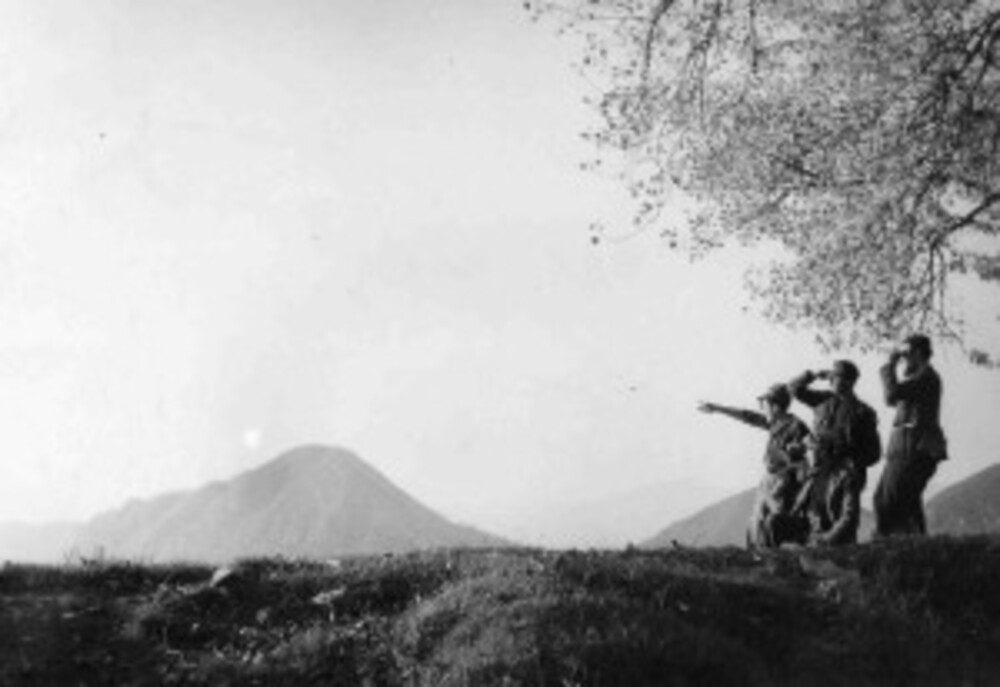

The part of my work that does not go through a classroom: the study centre, the process of city assemblies, the memory of the Resistance carried into schools.
member since 2023, board and scientific committee · circolocaldara.it
The circle is named after Emilio Caldara, the first socialist mayor of Milan, and holds together two things that usually stay apart: the life of a city club and the research of a study centre. On the board and the scientific committee I work on the programme of public meetings and on the research into the city’s own questions. My paper «Oltre il muro e i frammenti» came out of that work: a diagnosis of educational inequality in Milan neighbourhood by neighbourhood, with an agenda in five priorities – schooling not as one service among others, but as the civic infrastructure that holds a divided city together.
coordination of the process · heymilano.it
An open process of city assemblies and research on Milan, promoted with the Caldara study centre and ending in a congress. I coordinate the process and look after the research and the writing: the report Hey Milano, come stai? and the contributions that followed. The idea is simple and hard to practise: first listen to the city neighbourhood by neighbourhood, then write about it, then argue about it in public.

FIVL, Italian Federation of Volunteers for Freedom · fivl.eu
I am the schools officer of the FIVL: I coordinate the teaching and public history projects addressed to schools, from the course on the fifteen martyrs of Piazzale Loreto to the Storie che curano podcasts for the eightieth anniversaries. I speak in public on the memory of the Resistance and on democratic culture, including the Milanese commemorations of 25 April. The work on documents – the Fiamme Verdi, «il ribelle», the archive files – and the work with classes are the same thing seen from two sides.
What I built while working with these associations is in the public history page: «Mai più Piazza Fontana», the schools project born at the Caldara; the Fifteen Martyrs of Piazzale Loreto; the Brescia Fiamme Verdi and «il ribelle», made for the FIVL; the School of European Citizenship.